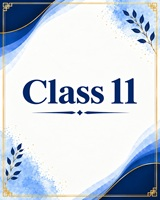
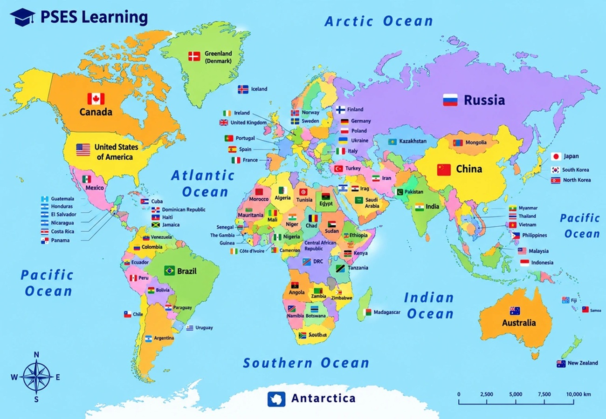

Foundation Track
Class 11
Constitution, rights, representation, political theory, and core concepts.
Open Class 11Political Science Exam Solutions
Chapter-wise notes, concepts, and exam preparation for Class 11 and 12 — all in one place.
Political Science becomes easier when the big ideas are visible. These snapshots create a more engaging starting point for students before they dive into detailed chapters.

Each class page is organized for quicker access, so students can reach chapters and continue studying without distractions.
The platform is designed around practical study needs: notes, long answers, short questions, quizzes, and chapter-wise reference material.
Concise and organized material for easier concept building and revision.
Download-friendly study support for short questions, long answers, and MCQs.
Quiz-based preparation to help students check understanding chapter by chapter.
Content flow shaped around school-level learning and final exam preparation.
PSES Learning is built with one goal: make Political Science easier to navigate for students who need a practical, chapter-wise learning experience.
Students can move from homepage to class page to chapter page with very little friction.
The site is centered on material that supports understanding, revision, and written preparation.
The foundation is ready for more notes, quizzes, PDFs, and richer classroom resources.
We aspire to contribute to a meaningful change in education by simplifying Political Science for learners. Our aim is to bring helpful, subject-focused resources onto one clean platform and keep improving it with your support.
If you want to suggest improvements or report an issue, you can contact us directly.